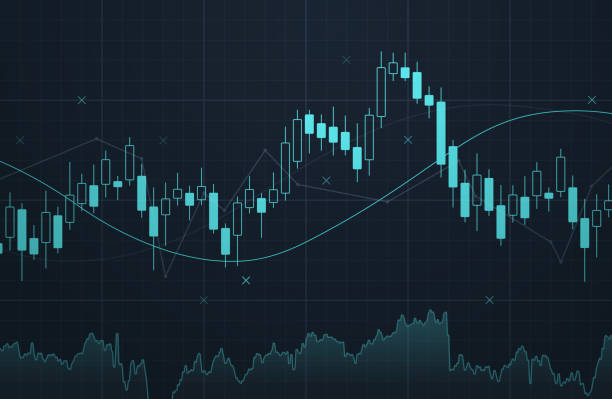
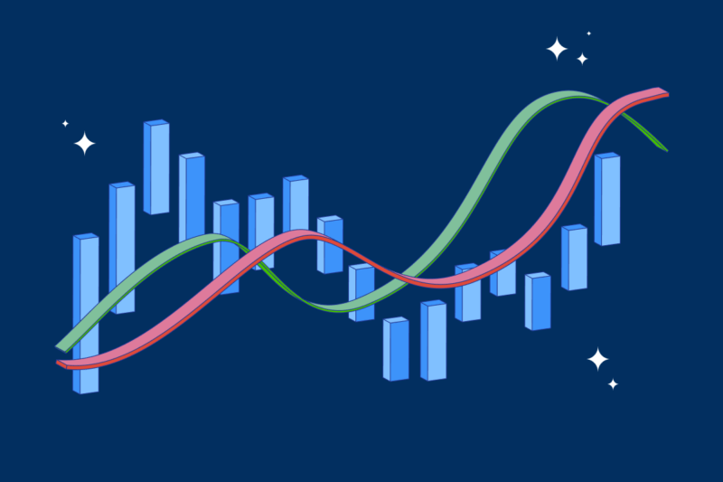

Trends
Crypto Trends
Cryptocurrency is relatively new, which can contribute to it drastically fluctuating and acting volatile. There are often times where crypto buyers suffer from tremendous losses from misinformation about predicting cryptos. The reasons why cryptocurrency can be difficult to predict is due to factors related to progress in the technology field, competition, pressure on the crypto market, and economic and security problems. The high volaitility of crypto is what causes users to gain profit, but mostly when they use specific and well-studied strategies in doing so. The two main ways in which new investors to crypto can analyze the market in hopes of gaining profit are technical analysis and fundamental analysis.

Fundamental Analysis
Cryptocurrency is relatively new, which can contribute to it drastically fluctuating and acting volatile. There are often times hwere crypto buyers suffer from tremendous losses from misinformation about predicting cryptos. The reasons why cryptocurrency can be difficult to predict is due to factors related to progress in the technology field, competition, pressure on the crypto market, and economic and security problems. The high volaitility of crypto is what causes users to gain profit, but mostly when they use specific and well-studied strategies in doing so. The two main ways in which new investors to crypto can analyze the market in hopes of gaining profit are technical analysis and fundamental analysis.
Technical Analysis
Cryptocurrency is relatively new, which can contribute to it drastically fluctuating and acting volatile. There are often times hwere crypto buyers suffer from tremendous losses from misinformation about predicting cryptos. The reasons why cryptocurrency can be difficult to predict is due to factors related to progress in the technology field, competition, pressure on the crypto market, and economic and security problems. The high volaitility of crypto is what causes users to gain profit, but mostly when they use specific and well-studied strategies in doing so. The two main ways in which new investors to crypto can analyze the market in hopes of gaining profit are technical analysis and fundamental analysis.

New-Crypto
Home
Contact
Trends
Cryptos
Bitcoin
Ethereum
Tether
Copyright 2022 New-Crypto. All Rights Reserved
Contact At: new-crypto@gmail.com